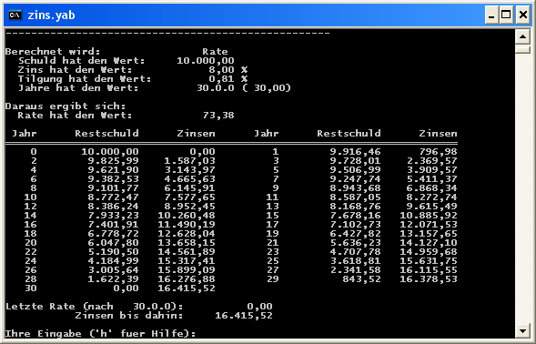

Version 2.41, vom 7. Juli 2004
Dieses Programm habe ich für die Berechnung unserer Baufinanzierung geschrieben:

Wie man sieht, ist die Oberfläche sehr spartanisch aber (nach etwas Eingewöhnung) funktional und schnell zu bedienen.
Man kann wählen, welche der Kenngrößen eines Kredites (bei Angabe der jeweils anderen) man berechnen will: Entweder Schuld, Rate (bzw. Tilgung), Zins oder Laufzeit. Eine kurze Hilfe ist eingebaut. Die Zahlendarstellung mit Tausendertrennzeichen ist gut zu lesen. Schließlich können noch mehrere Datensätze gespeichert und mit Hilfe des eingebauten Taschenrechners verglichen werden.
Das Programm zins.yab ist natürlich in yabasic geschrieben; eine eigenständig lauffähige Version, die ohne Installation auskommt, gibt es auch: zins.exe.
Zins.yab steht unter der GPL (Gnu Public License), kann also gerne kopiert und weiterverbreitet werden. Ich bin der Autor (auch von yabasic), mein Name ist Marc-Oliver Ihm.
Schließlich noch ein Hinweis: Ich bin kein Finanzfachmann und habe deshalb, die in diesem Programm verwendeten Formeln aus dem Konversationslexikon übernommen. Die Ergebnisse stimmen mit denen anderer Programme überein, bei wichtigen Entscheidungen sollten Sie aber trotzdem weitere Quellen konsultieren.